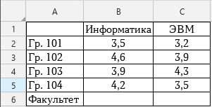
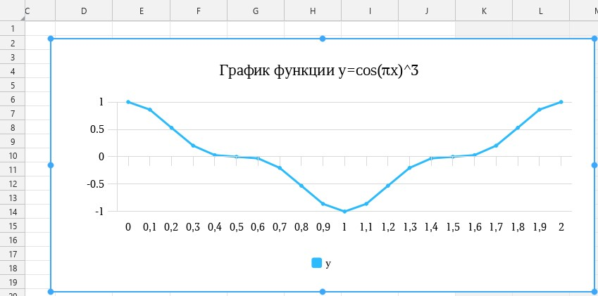

Практическая работа №4
Создание диаграмм в табличном процессоре МойОфис Таблица
1 Цель работы:
1.1 Освоить приемы создания, редактирования и форматирования диаграмм в табличном процессоре МойОфис Таблица.
2 Основное оборудование:
2.1 ПЭВМ.
3 Подготовка к работе:
3.1 Подготовить бланк отчета.
4 Задание:
4.1 Создать таблицу, содержащую сведения о средних баллах по дисциплинам среди групп факультета и вычислить средний балл по факультету по каждой дисциплине.
4.2 Построить внедренную диаграмму, отображающую средние баллы по каждой дисциплине каждой группы и факультета и отформатировать ее.
Построить график функции y=cos3(πx), при x изменяющемся на отрезке [0; 2] с шагом 0,1.
5 Порядок выполнения работы:
5.1 Запустить редактор «МойОфис Таблица».
5.2 Оформить таблицу согласно рисунку 1.

Рисунок 1 – Таблица успеваемости
5.3 В пустые ячейки строки с названием «Факультет» ввести формулы вычисления среднего балла по факультету по каждой дисциплине.
5.4 Построить внедренную диаграмму, отображающую средние баллы по каждой дисциплине каждой группы и факультета. Для этого:
– выделить диапазон ячеек A2:C6;
– на вкладке «Вставка» выполнить команду «Диаграмма» и выбрать «Гистограмма с группировкой»;
– поставить галочки напротив «Первый столбец» и «Первая строка» и нажать «ОК».
5.5 Ввести название диаграммы. Для этого:
– выделить диаграмму;
– перейти в настройки диаграммы;
– в поле «Название» написать «Сведения об успеваемости» и нажать «ОК».
5.6 Добавить в исходную таблицу новый столбец «Философия» с различными оценками.
5.7 Изменить диаграмму, включив в нее данные по философии.
5.8 Поместить диаграмму на отдельном листе.
5.9 Построить график функции y=cos3(πx), при x изменяющемся на отрезке [0; 2] с шагом 0,1. Для этого:
– в ячейку А1 ввести текст «Х», в ячейку В1 ввести текст «У»;
– заполнить диапазон ячеек, начиная с ячейки А2, значениями аргумента х от 0 до 2 с шагом 0,1;
– в диапазон ячеек, начиная с ячейки В2 ввести формулы для вычисления функции для каждого значения х;
– построить график функции, тип диаграммы – «График с маркерами»;
– изменить название графика на «График функции y=cos3(πx)»
В результате должен получится следующий график:

6 Содержание отчета:
6.1 Титульный лист;
6.2 Цель работы;
6.3 Ответы на контрольные вопросы.
7 Контрольные вопросы:
7.1 Что такое диаграмма в МойОфис Таблица?
7.2 Какие типы диаграмм существуют в МойОфис Таблица?
7.3 Как открыть панель настроек диаграммы?
7.4 Как можно построить график математической функции?
7.5 Как сменить тип созданной диаграммы?